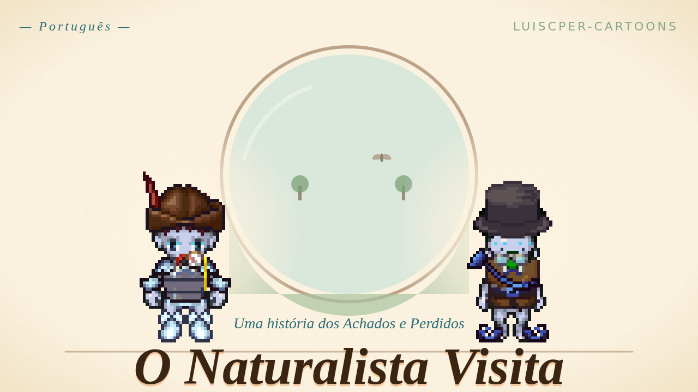

História para ouvir · De 4 a 8 anos
O Naturalista Visita

Quando um velho naturalista de voz baixinha chega ao Achados e Perdidos sem a última página do seu caderninho de campo, a pequena classificadora apressada Mira precisa desacelerar o bastante pra descobrir que ele perdeu também uma coisa mais quietinha.
Esta é a trilha sonora do nosso desenho animado “O Naturalista Visita”: as mesmas vozes, a mesma música e os mesmos sons. Desliguem a tela e ouçam juntos, no carro, na hora de dormir ou enquanto desenham.
- 👧 De 4 a 8 anos
- ⏱ 4 min 19 s
- 🗣 Em português
- ✓ Grátis, sem cadastro
Compartilhar esta página
Mande este link para outra família.
Feed do podcast
Para seguir em um app de podcast, copie este endereço e adicione no app.
Transcrição
Tudo o que os personagens falam, em ordem.
Apresentação(A Sala de Triagem)
Mira: Tá-tá-tá! Visita nova! Oi! Bem-vindo! O que você perdeu? Uma luva? Um nome? Um dentinho mole? Aqui chega um monte de dentinho mole.
Sr. Pemberton Pluma: Olá. Eu perdi… uma página pequena. A última página. Do meu livrinho.
Mira: Uma página! Anotado. Papel. Última-página-de-livrinho. Fácil. Cor? Tamanho? Cabe no bolso? Grande feito um prato?
Sr. Pemberton Pluma: …Cabe no bolso. Com um desenho. De um besourinho. Um besouro bem pequeno, deste tamanho assim—
Mira: Página-do-besouro, página-do-besouro, tá! Eu acho!
Subida(A Janela para Fora)
Mira: A Janela para Fora mostra onde você perdeu. Segura a coisa — quer dizer, segura a ideia da coisa — e olha. Pronto? Vai!
Mira: Musgo. Achei musgo. Muito musgo. Cadê a página, cadê a página— não vejo papel. Vejo… folhas. Mais folhas. Folhas chatas. — desculpa — folhas interessantes.
Sr. Pemberton Pluma: …e aqui, bem aqui, uma coisinha está acordando.
Mira: Quê?
Sr. Pemberton Pluma: Espera. Olha. Uma gota de água. Ela rola. A samambaia se curva. Um besourinho marrom dá um passo para fora.
Mira: Eu não vejo nenhum— ah. Ah. Tem um besouro mesmo. É tão pequeno. Como você viu isso?
Sr. Pemberton Pluma: Eu reparei.
Mira: Você — o quê? Você reparou?
Sr. Pemberton Pluma: Reparar é olhar devagar. É deixar uma coisinha chegar.
Mira: Hum.
Clímax(de volta à Sala de Triagem → O Sofá do Aconchego)
Mira: Tá-tá-tá, plano! Eu corro nas esteiras, confiro a caixa de papel, confiro a caixa de desenhos, confiro a caixinha-de-desenhos-de-besouro, mole-mole—
Sr. Pemberton Pluma: …acho que perdi outra coisa também.
Mira: ACHEI! Página do besouro! Última página! Senhor — Senhor Alto-e-Caladinho — EU ACHEI!
Sr. Pemberton Pluma: …Obrigado.
Mira: …Você tá bem? Você ainda não tá inteiro.
Sr. Pemberton Pluma: Não. Eu ainda não me sinto inteiro.
Mira: Você perdeu duas coisas?
Sr. Pemberton Pluma: Acho que perdi a parte de mim que acha as coisas. A parte que espera. A parte que — repara. Foi uma semana barulhenta. Cheguei aqui com tanta pressa que deixei essa parte pelo caminho.
Mira: Tá. Me conta de novo do besouro.
Resolução(O Sofá do Aconchego)
Sr. Pemberton Pluma: …uma gota de água. Ela rola. A samambaia se curva. Um besourinho marrom dá um passo para fora. As costas dele brilham. Ele para. Ele pensa um pensamento de besouro. E segue.
Sr. Pemberton Pluma: …olha ela aí.
Mira: Olha o quê?
Sr. Pemberton Pluma: A atenção quietinha. Voltou. Esteve aqui o tempo todo. Só precisava de alguém para ficar sentado quietinho com ela.
Mira: Eu fiquei sentada quietinha.
Sr. Pemberton Pluma: Ficou. Obrigado, Mira. Você achou duas coisas.
Mira: Dois pelo preço de um! Melhor triagem da semana! …quer dizer. Que bom.
Encerramento(A Sala de Triagem)
Sr. Pemberton Pluma: Tenta amanhã. Escolhe uma coisinha. Uma migalha. Uma rachadura no chão. Um pedacinho de fiapo numa luva. Olha pra ela o tempo que uma nuvem leva pra se mexer.
Mira: Tá-tá— …tá.
Mira: …eu reparei em você.
Créditos
- História e desenho animado: Desenhos do Achados e Perdidos.
- Música e sons: Desenhos do Achados e Perdidos.
- Desenhos: pixel art da biblioteca LPC Universal Sprite, CC-BY-SA (créditos dos artistas).